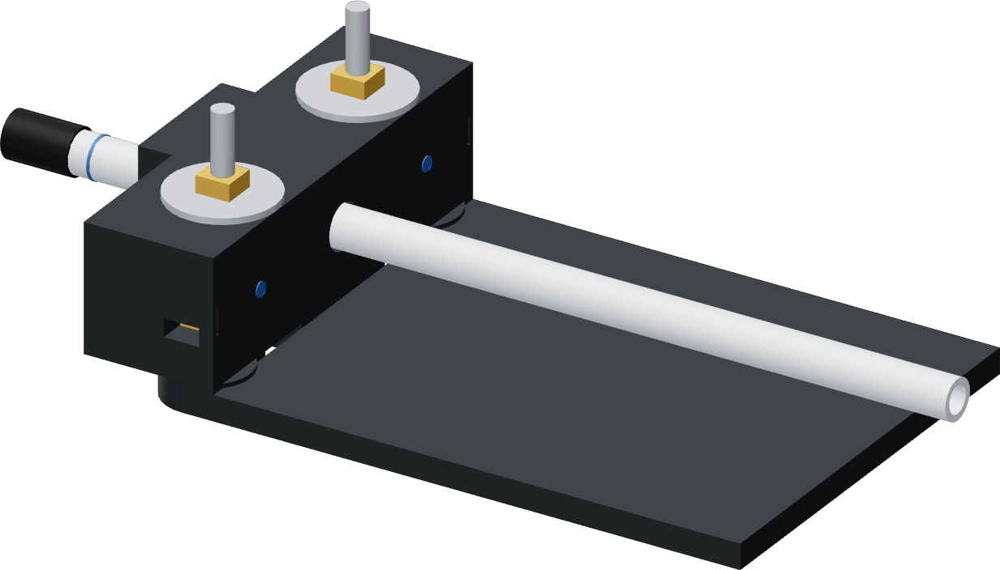

Move the grip to its mark
The grip pushes the tube. The thimble and port remain free of the jaws.

- Loosen the two jaw screws enough to open the grip and relocate it without dragging a closed liner along the tube.
- Place the two liners around the bare LLDPE with the front edge of both jaws at the clamp-front mark.
- Close the rigid jaw shoulders evenly using the two M5 screws. The rigid closure shoulders limit compression; do not add a spacer or extra squeeze.
- Confirm both marks are where intended and the tube end remains fully seated on the thimble's cap.
Watch the grip and tube
Use the designed jaw closure. If the grip slips during insertion, or the tube stays flattened after release, stop and inspect the liner fit and jaw closure.